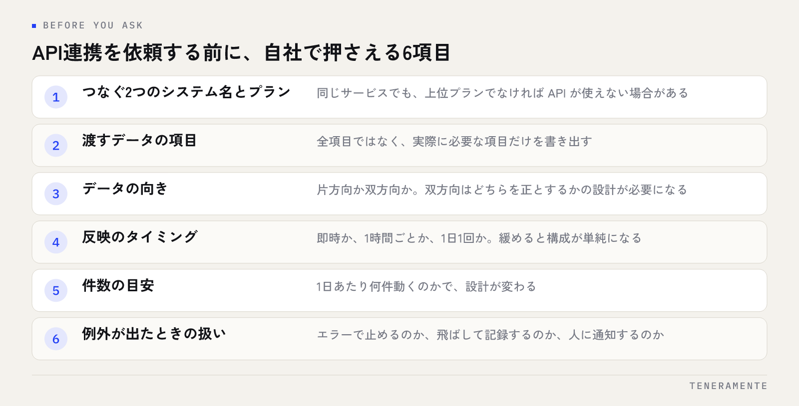

複数のシステムを使っていると、同じ情報を2回入力する作業が必ず出てきます。これを解消する手段がAPI連携です。API連携とは、業務システム同士がデータを自動で受け渡すための約束事であり、人が画面を開いて写す工程をなくすための仕組みです。この記事では、仕組みの考え方と、外部に依頼する前に確認しておくことを順に整理します。
📌 この記事の結論
API連携とは、システムが相手のシステムに直接データを渡す・受け取るための窓口です。重要なのは技術の名前ではなく、つなぎたい両方のシステムにその窓口が用意されているかどうかです。窓口の有無と、渡すデータの範囲と向きを先に確認すると、依頼の精度が一気に上がります。
01API連携とは、システム同士がデータを受け渡す約束事
API（Application Programming Interface）とは、あるシステムが外部に向けて開けている窓口のことです。人が使う画面とは別に、プログラムが呼び出すための入口が用意されている、という状態を指します。
たとえば、ある販売管理システムに「受注データを登録する窓口」と「在庫を問い合わせる窓口」があるとします。この窓口を別のシステムから呼び出せば、画面を開かずに受注が登録され、在庫が返ってきます。この呼び出しをつないだものがAPI連携です。
押さえておきたいのは、APIは相手側が用意していなければ使えないという点です。自社側でどれだけ作り込んでも、相手のシステムに窓口がなければ正面からはつながりません。だからAPI連携の検討は、機能の設計より先に「窓口があるか」の確認から始まります。
02手作業のデータ移しと何が違うのか
いま多くの現場で行われているのは、片方のシステムからCSVを出して、もう片方に取り込む作業です。または画面を2つ開いて目で見ながら入力する作業です。API連携との違いは、速さだけではありません。
違いは3つあります。第一に、タイミングが人に依存しなくなること。手作業だと「担当者が出社してから」「月末にまとめて」という間隔が生まれます。第二に、写し間違いが構造的に消えること。桁の読み違いや行のずれは、人が介在する限り確率で起こります。第三に、作業の記録が残ること。いつ何件渡したかがログに残り、不一致が出たときに追えます。
逆に言えば、手作業で問題が起きていない業務は急いでつなぐ必要がありません。つなぐ優先順位は、件数の多さと、ずれたときの影響の大きさで決まります。受注や入金のように金額が動くデータは優先度が高く、年に数回の集計は後回しでかまいません。
03つなぎ方はAPIだけではない
「つなぐ」という相談を受けたとき、選択肢はAPIに限りません。相手のシステムの状態によって、現実的な手段は変わります。
| つなぎ方 | 向く場面 | 注意する点 |
|---|---|---|
| API連携 | 両方に窓口があり、随時やり取りしたい | 相手の仕様変更に追従する保守が必要 |
| ファイル連携（CSVなど） | 窓口がないが、出力と取り込みはできる | 受け渡しの置き場所と実行の時刻を決める必要がある |
| RPA・画面操作の自動化 | 窓口も出力もなく、画面しか触れない | 画面の変更で止まりやすい |
| 中間データベースを置く | 3つ以上をつなぐ、履歴も残したい | 構成が増えるため設計と運用の負担が上がる |
この表で確かめるのは、自社がどの行に当てはまるかです。1行目でないなら、API連携という言葉を使わずに「ファイル連携」として設計したほうが、安く確実に済む場合があります。手段の名前にこだわる必要はありません。
画面操作の自動化が向く場面とその限界は、RPAとは何かで詳しく扱っています。
04API連携でできること・できないこと
できることは、おおむね次の範囲です。データの登録、取得、更新、削除。それと、相手側で何かが起きたときに通知を受け取ること。この4つと通知の組み合わせで、ほとんどの連携は組めます。
一方で、できないことも明確にあります。
- 相手のAPIにない情報は取れない。画面に表示されていても、APIで公開されていない項目はあります
- 一度に扱える件数や呼び出し回数に上限があることが多い。大量の過去データを一気に移す用途には向きません
- 項目の意味の違いは埋まらない。「顧客名」が片方は会社名、片方は担当者名なら、どちらに入れるかを人が決める必要があります
- 業務の判断は代わりにできない。例外が入る処理は、つなぐ前にルールを決めておく必要があります
確かめ方
候補のシステムの名前に「API ドキュメント」「開発者向け」を足して検索してください。公開された仕様書があれば、取れる項目と上限がその場で分かります。見つからない、または問い合わせないと出てこない場合は、その確認自体に時間がかかる前提で計画してください。
05依頼する前に確認する6つのこと
外部に相談する前に、次の6つを自社で押さえておくと、見積もりの精度が変わります。

つなぐ2つのシステム名とプラン。同じサービスでも、上位プランでなければAPIが使えない場合があります。渡すデータの項目。全項目ではなく、実際に必要な項目だけを書き出します。データの向き。片方向か双方向か。双方向にすると、どちらを正とするかの設計が必要になり、難しさが上がります。
反映のタイミング。即時か、1時間ごとか、1日1回か。即時が必要な業務は意外に少なく、ここを緩めると構成が単純になります。件数の目安。1日あたり何件動くのかで、設計が変わります。例外が出たときの扱い。エラーで止めるのか、飛ばして記録するのか、人に通知するのか。
依頼時に整理しておく情報の全体像は、AIツール開発を依頼する前の準備にもまとめています。
06費用と期間の読み方
API連携の費用は、つなぐシステムの数ではなく、項目数と例外処理の多さで決まります。項目が5つで片方向なら小さく収まり、双方向で例外の分岐が多ければ、そちらのほうが大きくなります。
TENERAMENTEの業務Webアプリ開発は初期費用30万円〜で、要件に応じた見積もりになります。連携だけを単体で依頼する場合も、まずつなぐ範囲を1つに絞って小さく作り、動くものを見てから広げる進め方をおすすめしています。最短2週間でPoC（試作）を用意できるため、紙の上で仕様を固めきる前に、実際のデータが通るかを確かめられます。
見積もりで見るべきなのは金額の大小ではなく、公開後の保守がどう扱われているかです。相手のシステムが仕様を変えれば、連携は止まります。止まったときに誰がどのくらいの時間で直すのかを、契約の前に確認してください。
止まる前提で設計する
API連携は必ずいつか止まります。相手の計画メンテナンス、仕様変更、通信の一時的な不調が原因です。問題になるのは止まることではなく、止まったことに気づかないまま日数が経つことです。失敗を通知する仕組みと、手作業に戻せる経路を最初から用意しておいてください。
07よくある失敗
全項目をつなごうとする。使っていない項目まで対象にすると、設計も検証も膨らみます。まず動かしたいのは、毎日人が写している項目だけです。
双方向を安易に選ぶ。両方から更新できる構成にすると、同じレコードが両側で変わったときの扱いを決めなければなりません。片方向で足りるなら、片方向にしてください。
過去データの移行を連携に混ぜる。日々の受け渡しと、過去分の一括移行は別の作業です。同じ仕組みでやろうとすると、呼び出し回数の上限に当たります。
認証情報の管理を決めていない。APIの利用には鍵や認証情報が必要です。誰が保管し、担当者が変わったときにどう引き継ぐかを決めていないと、運用の途中で動かせなくなります。
つなぎたいシステムにAPIがない場合はどうすればよいですか？
API連携は内製できますか？
どのくらいの件数からつなぐ価値がありますか？
08まとめ：つなぐ前に、範囲と向きを決める
API連携とは、業務システム同士がデータを受け渡すための窓口を使う仕組みです。検討の順番は、窓口があるかの確認、渡す項目の絞り込み、向きとタイミングの決定、例外の扱いの決定です。この4つが決まっていれば、実装はその後の作業になります。
逆に、この4つを決めずに「つないでほしい」と相談すると、見積もりは大きく振れます。手元で書き出せるのは項目と向きとタイミングまでで、それだけで十分です。技術の選択は相談先に任せてかまいません。
TENERAMENTEでは、業務の棚卸しから連携範囲の切り分け、必要な部分だけを対象にした開発までを一貫して支援しています。詳しくは業務改善AIアプリ開発のサービス紹介をご覧ください。どこをつなげば手作業が減るのか整理したい方は、お問い合わせからご相談ください。初回相談60分は無料です。